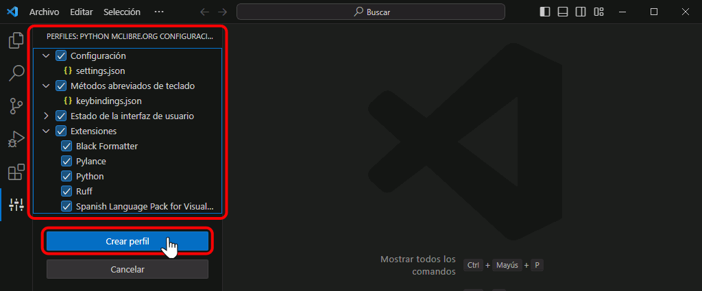

Visual Studio Code. Perfil recomendado para el curso Introducción a la programación con Python
Visual Studio Code permite utilizar perfiles, lo que permite cambiar de forma sencilla entre distintas configuraciones (extensiones instaladas, preferencias, tareas, atajos y aspecto del interfaz). Además, los perfiles se pueden compartir, lo que facilita la puesta a punto del editor en distintos ordenadores. Por desgracia, los perfiles todavía tienen algunas limitaciones, por lo que la configuración a veces no puede ser completamente automática y requiere algunos pasos finales manuales.
En esta lección se comenta cómo instalar y completar la configuración de un perfil que incluye la Configuración recomendada para seguir este curso de Python. Consulte esas lecciones para conocer todo lo que incluye el perfil.
Copie y pegue el enlace en la caja de texto y pulse Intro:
Se mostrará la lista de elementos incluidos en el perfil (que se pueden seleccionar de forma individual). Para importar los elementos seleccionados, haga clic en el botón "Crear perfil":

Se mostrará una caja de texto con el nombre del perfil:
Ese nombre se puede cambiar, por ejemplo, por un nombre más corto. Es aconsejable que el nombre de cada perfil empiece de forma distinta (el motivo se explica en la captura siguiente). Para terminar, haga clic en el botón "Crear".
Una vez creado el perfil, Visual Studio se reiniciará cargando el perfil. El nombre del perfil activo se muestra en la parte superior de la ventana. En este caso, el perfil tiene asociado el icono de la serpiente, lo que permite identificar el perfil que se está utilizando. Si el perfil no tuviera asociado ningún icono, se mostraría el icono de la rueda dentada junto con un par de caracteres que corresponden al principio del nombre del perfil. Si los nombres de perfiles empiezan de forma distinta, de un vistazo se puede identificar el perfil que se está utilizando.
Nota: Actualmente (diciembre de 2023), si dos perfiles tienen asociado el mismo icono, no se añaden las dos letras que permitirían distinguir los perfiles de un vistazo. He abierto una issue, VSCode GitHub issue #2000392, para pedir que añadan el texto cuando el icono es utilizado por varios perfiles.
El perfil importado se mostrará en el menú de congiguración.